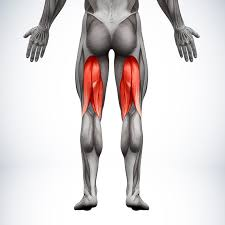

Diffrent types
 The incidence and recurrence of hamstrings injuries are very high in sports, posing
elevated performance and financial-related costs. Attempts to identify the risk factors
involved in predicting vulnerability to hamstrings injury is important for designing
exercise-based programs that aim to mitigate the rate and severity of hamstrings injuries
and improve rehabilitation strategies. However, research has shown that non-modifiable risk factors may
play a greater role than modifiable risk factors. Recognizing non-modifiable risk factors and understanding their implications
will afford the prescription of better suited exercise programs, i.e., that are more respectful of the individual characteristics.
In a nutshell, non-modifiable risk factors can still be acted upon, even if indirectly. In this context, an underexplored topic is
how intra and inter- individual anatomic and physiologic variations in hamstrings (e.g., muscle bellies, fiber types, tendon length,
aponeurosis width, attachment sites, sex- and age-related differences) concur to alter hamstrings injuries risk. Some anatomic and
physiologic variations may be modifiable through exercise interventions (e.g., cross-sectional area), while others may not (e.g.,
supernumerary muscle bellies). This apparent dichotomy may hide a greater complexity, i.e., there may be risk factors that are partially modifiable.
Therefore, we explored the available information on the anatomic variations of the hamstrings, providing a deeper insight into the individual risk
factors for hamstrings injuries and contributing with better knowledge and potential applications toward a more individualized exercise prescription.learn more